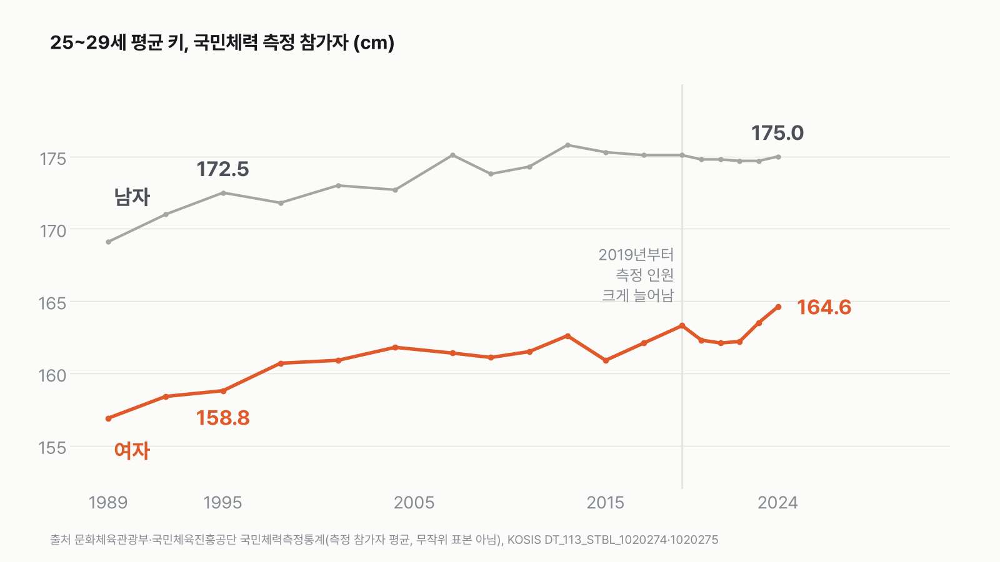

30년 새, 여자 키가 남자보다 더 많이 컸어요
남녀 키 차이는 1995년 13.7cm에서 2024년 10.4cm로 줄었어요. 2022년까지만 봐도 여자는 3.4cm, 남자는 2.2cm 커서 '여자가 더 많이 컸다'는 그대로예요.

3줄 요약
- 국민체력 측정에 참가한 20대 후반(25~29세) 여자의 평균 키는 1995년 158.8cm에서 2024년 164.6cm가 됐어요. 5.8cm 컸어요.
- 같은 나이 남자는 172.5cm에서 175.0cm로 2.5cm 컸어요. 여자가 남자보다 더 많이 컸어요.
- 다만 여자 키는 2022년(162.2cm)부터 2년 새 2.4cm 뛰었어요. 측정 참가자가 달라진 영향일 수 있어서, 2022년까지만 봐도 여자가 더 많이 컸는지 따로 확인했어요.
| 25~29세, 평균 키 | 1995년 | 2022년 | 2024년 | 1995→2024 |
|---|---|---|---|---|
| 여자 | 158.8cm | 162.2cm | 164.6cm | +5.8cm |
| 남자 | 172.5cm | 174.7cm | 175.0cm | +2.5cm |
| 남녀 차이 | 13.7cm | 12.5cm | 10.4cm | −3.3cm |
여자: 158.8cm → 164.6cm
20대 후반 여자의 평균 키는 1995년 158.8cm였어요. 2024년에는 164.6cm예요.
남자: 172.5cm → 175.0cm
남자는 2007년 175.1cm에 닿은 뒤로 173.8~175.8cm 사이를 오갔어요. 2024년은 175.0cm예요.
최근 2년 크게 뛴 여자 키
여자 키는 2017년 162.1cm, 2022년 162.2cm로 몇 해 동안 비슷했어요. 그러다 2023년 163.5cm, 2024년 164.6cm로 2년 새 2.4cm 올랐어요.
2017년(162.1cm)과 2022년(162.2cm)은 거의 같았는데, 2022년부터 2년 새 2.4cm 올랐어요. 그해 측정에 온 사람들이 바뀐 영향일 수 있어요. 그래서 2022년까지로 끊어서도 봤어요. 1995→2022년 여자 +3.4cm, 남자 +2.2cm로 여자가 더 많이 컸어요.
20대 초반도 같은 방향
19~24세 여자도 1995년 160.0cm에서 2024년 164.6cm로 4.6cm 컸어요. 같은 나이 남자는 172.8cm에서 175.1cm로 2.3cm 컸어요.
숫자를 다시 보며
이 숫자는 전 국민을 무작위로 뽑아 잰 키가 아니라, 국민체력 측정에 참가한 사람들의 평균이에요. 해마다 참가자가 달라서 한두 해 값은 흔들려요. 긴 흐름으로 보면 20대 여자 키가 남자보다 많이 컸어요. 여러분 주변 20대는 어떤가요?
이 숫자는 어디서 왔나요
출처
기준일 2024년 측정까지예요(KOSIS 2026년 3월 26일 갱신). 2026년 11월 16일에 받았어요.
| 데이터 | 출처 | 쓰임 |
|---|---|---|
| 신장 변화: 성인 남자 | 문화체육관광부·국민체육진흥공단, KOSIS DT_113_STBL_1020274 | 남자 나이대별 평균 키 1989~2024 |
| 신장 변화: 성인 여자 | 문화체육관광부·국민체육진흥공단, KOSIS DT_113_STBL_1020275 | 여자 나이대별 평균 키 1989~2024 |
어떻게 셌나요
- 자료: 문화체육관광부·국민체육진흥공단 「국민체력측정통계」 신장 변화(성인 남자·성인 여자). KOSIS DT_113_STBL_1020274·DT_113_STBL_1020275.
- 누구의 평균인가: 국민체력실태조사와 국민체력100 측정에 참가한 사람의 평균 키예요. 전 국민 무작위 표본이 아니에요.
- 비교 연도: pm이 정한 1995년과 2024년을 견줬어요. 최근 값이 크게 뛰어서 2022년도 함께 봤어요.
- 차이: 나중 해 평균 − 앞선 해 평균. 반올림한 평균끼리 뺐어요.
한계 4가지
이 데이터로 말할 수 없는 것
- 무작위 표본이 아니에요. 측정에 스스로 참가한 사람들의 평균이라, 전 국민 평균 키와 다를 수 있어요.
- 2019년부터 측정 인원이 크게 늘었어요. 20대 여자 측정 인원은 1995년 306명, 2024년 30,776명이에요. 참가자 구성이 바뀌면 평균도 달라져요.
- 2024년 여자 값은 2년 새 2.4cm 크게 뛰었어요. 참가자 구성이 바뀐 영향일 수 있어요. 그래서 2022년까지의 비교를 함께 적었어요.
- 왜 컸는지(영양, 생활 등)는 이 자료로 알 수 없어요.
새 글 나오면 받아 보기
피드 리더 앱에 이 사이트 주소를 한 번 넣어 두면, 새 글이 올라올 때 앱에 떠요. 가입이나 메일 주소는 필요 없어요.
받는 법 보기
- 피드 리더 앱을 하나 골라요. 새 글을 모아 보여 주는 앱이에요. 예를 들면 Feedly나 Inoreader가 있어요. 둘 다 무료고 웹·휴대폰에서 써요.
- 앱에서 '구독 추가'(+)를 누르고 아래 주소를 붙여 넣어요.
- 끝이에요. 새 글이 올라오면 앱 목록에 떠요.
https://protofu.github.io/opendata-insight/feed.xmlFeedly를 쓴다면 여기를 눌러 바로 추가할 수도 있어요.